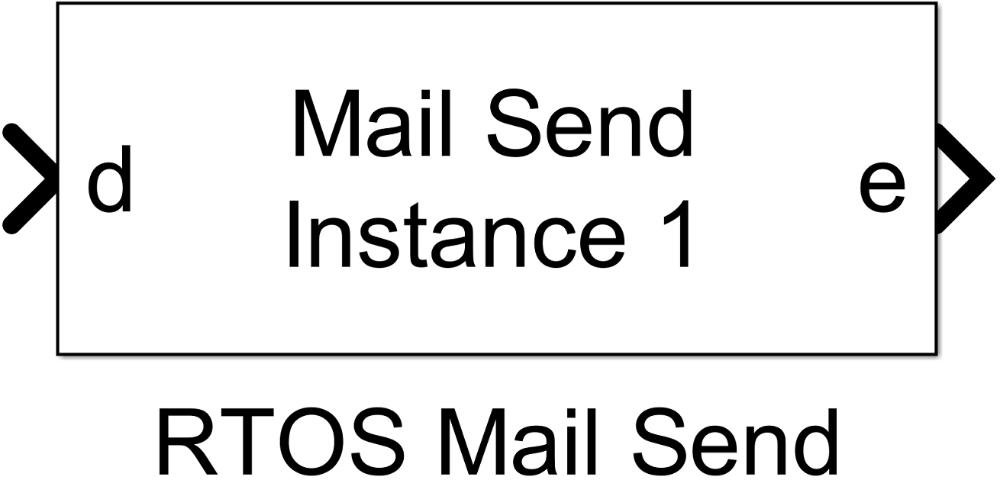
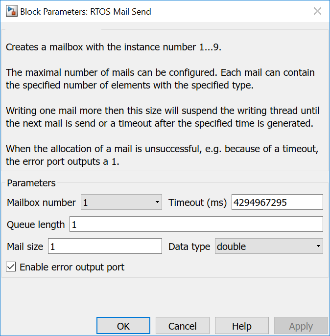
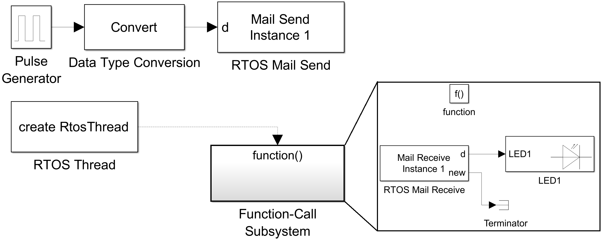
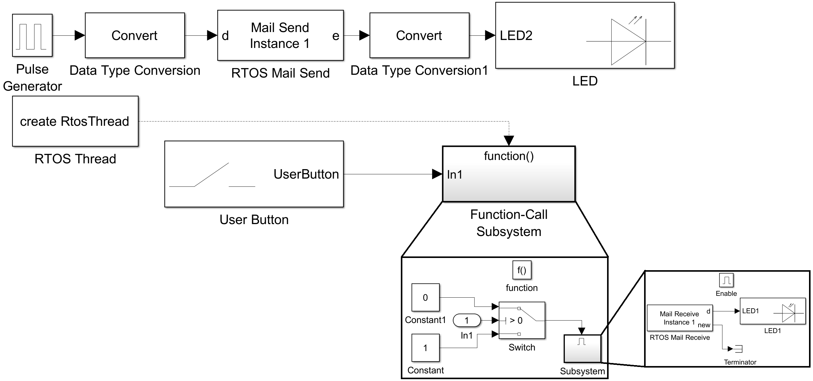

6.4. Mail Send
6.4.1. Description
Creates a mailbox with the instance number 1…9.
The maximal number of mails can be configured. Each mail can contain the specified number of elements with the specified type.
Writing one mail more then this size will suspend the writing thread until the next mail is send or a timeout after the specified time is generated.
When the allocation of a mail is unsuccessful, e.g. because of a timeout, the error port outputs a 1.
{kind=link}
6.4.2. Data Type Support
The input port expects values with configured data type. Single or vector values are expected, depending on the configured Mail size.
6.4.3. Parameters and Dialog Box
6.4.3.1. Mailbox number
specifies an internal mail box number. It is used to generate a unique instance name to allow several mail boxes in a model and to tie Mail Send and Mail Receive blocks together.
6.4.3.2. Timeout
specifies the timeout in milliseconds. A value of 0 means no waiting.
6.4.3.3. Queue length
specifies the maximal number of mails in the mail queue. Writing one mail more than this number blocks the writing thread until at least one mail is read by the connected Mail Receive block or a timeout occurs.
6.4.3.4. Mail size
specifies the number of data elements in each mail.
6.4.3.5. Data type
specifies the data type of the elements in a mail. All data elements have the same type. The following types are possible:
- double
- single
- int8
- uint8
- int16
- uint16
- int32
- uint32
6.4.4. Example 1
The example realises a LED blinking with sending the on/off information over mails. The generator creates periodically these mails. The function-call subsystem runs in a Thread in an endless loop without wait. But reading from an empty Mail queue blocks the thread until a message is received. When it received one, the contents, a single uint8 value, is written to LED1. The following mail.get() in Mail Receive block blocks again until the next mail is generated.
{kind=link}
6.4.5. Example 2
The example realises again a LED blinking. The generator creates again periodically mails with the on/off information. The function-call subsystem runs in a Thread in an endless loop without wait. The UserButton enables/disables the enabled subsystem in the function-call subsystem. The content of the enabled subsystem is identical to the function-call subsystem in example 1. In this example the reading from the mail queue can be stoped. Resulting in a full mail queue after a short moment, resulting in an enabled error led (LED2). When releasing the UserButton the mail queue is emptied - blinking starts again - and the error led is disabled.
{kind=link}
6.4.6. Code Generation
Instance name of mbed class Mail is created by concatenating mail_box and the Mailbox number: mail_box<Mailbox number>
6.4.6.1. Global parts
creates a data type
typedef <Data type> mail<Mailbox number>_T[<Mail size>];
and globaly a variable and a Mail instance
const int mail<Mailbox number>_len = sizeof(<Data type>)*<Mail size>;
Mail<mail<Mailbox number>_T,<Queue length>> mail_box<Mailbox number>;
in <Model Name>.cpp.
6.4.6.2. Step Function
creates several lines in void <Model Name>_step(void) function
mail<Mailbox number>_T *mail = mail_box<Mailbox number>.alloc(<Timeout>);
if (mail != NULL) {
memcpy(mail, <pointer to input port data vector>, mail<Mailbox number>_len);
mail_box<Mailbox number>.put(mail);
<output port e> = 0; // this line is only generated when error port is enabled
} else // this line is only generated when error port is enabled
<output port e> = 1; // this line is only generated when error port is enabled
Here is a concrete example with Mailbox number = 1
mail1_T *mail = mail_box1.alloc(10000U);
if (mail != NULL) {
memcpy(mail, &rtb_DataTypeConversion1, mail1_len);
mail_box1.put(mail);
rtb_RTOSMailSend = 0;
} else
rtb_RTOSMailSend = 1;